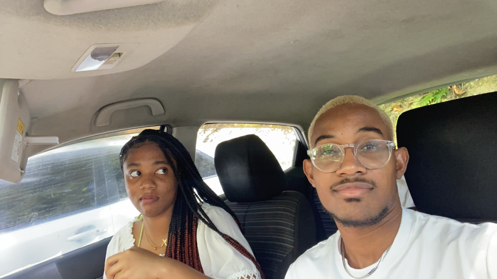
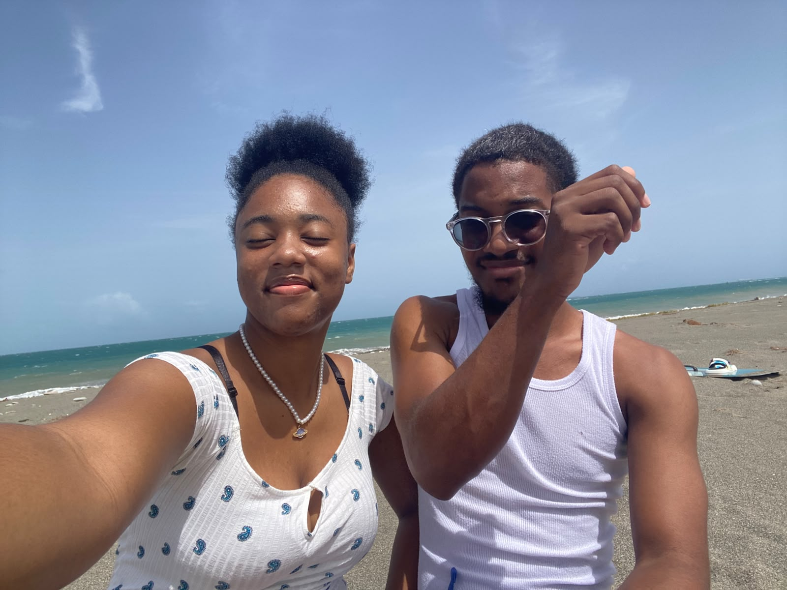
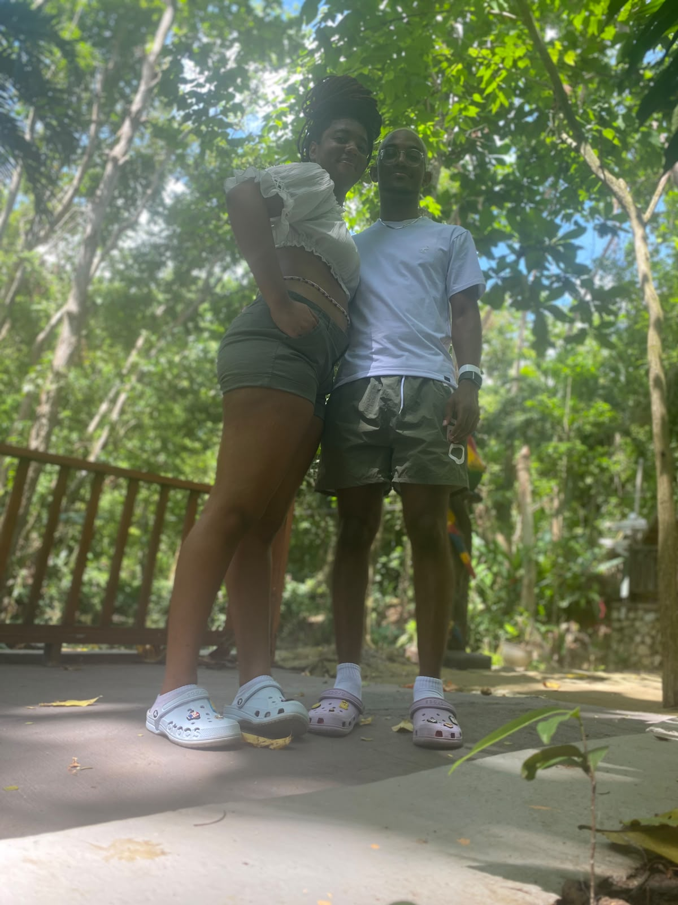
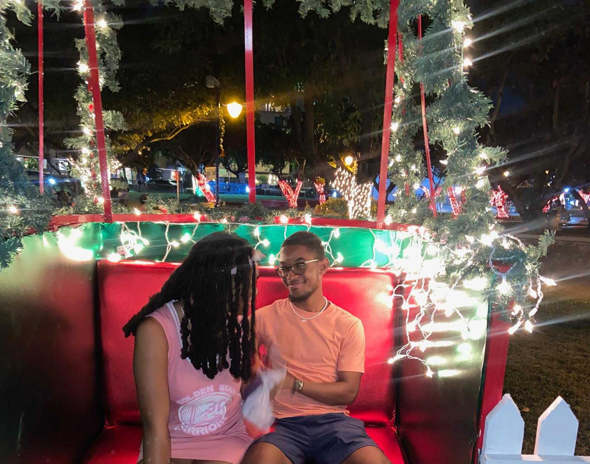
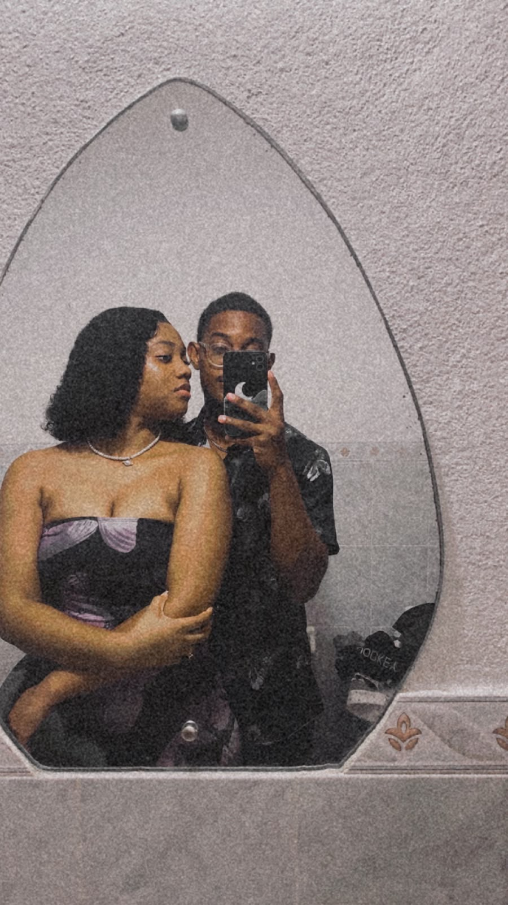
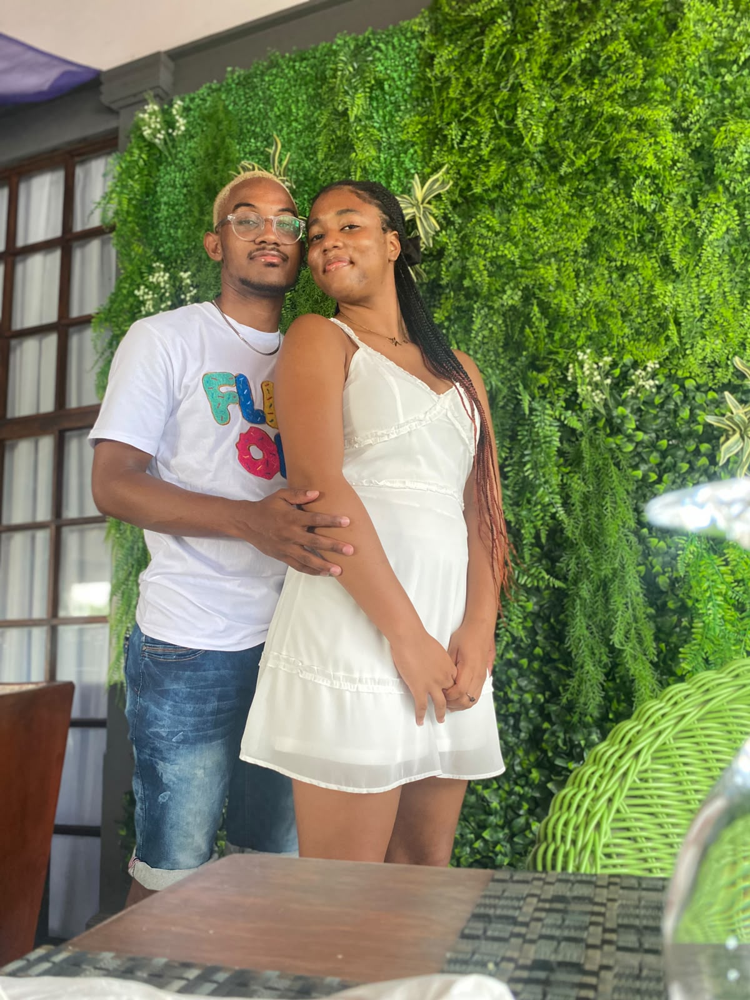
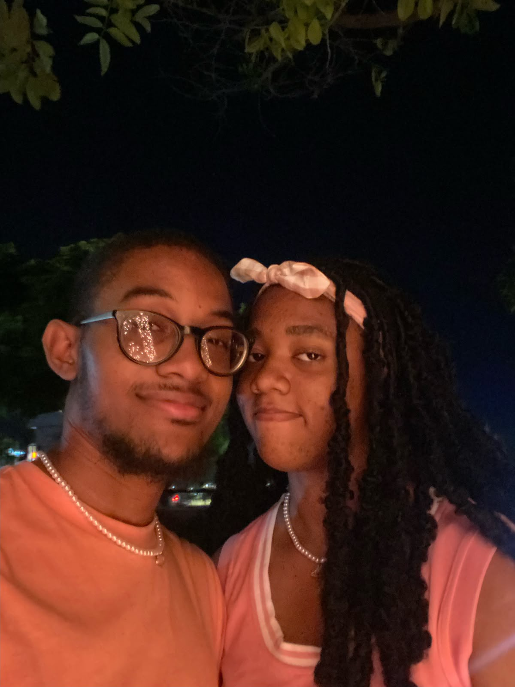
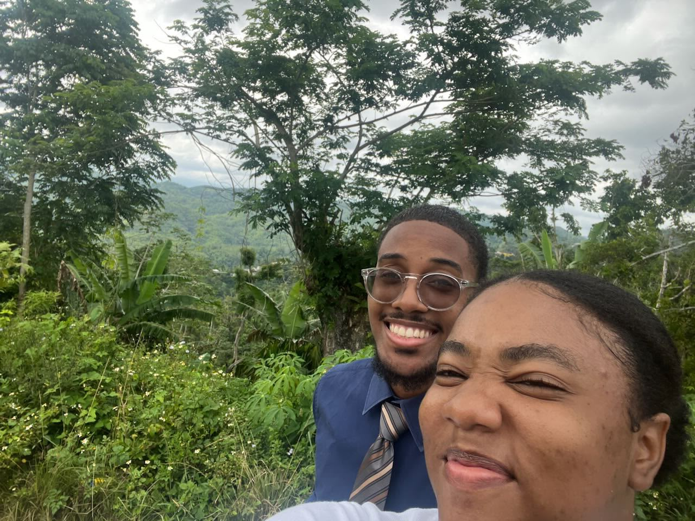

A LITTLE FOREVER ORIGINAL
Our Love Story
Starring you & me · Romance · Still being written
A little story inspired by our photographs.
ADVENTURE 07 OF 14
Little moments. A thousand reasons to choose you.
A LITTLE FOREVER ORIGINAL
Starring you & me · Romance · Still being written
A little story inspired by our photographs.

CHAPTER 01
A ride together. A quick selfie. Nothing that needs a grand explanation. Just a little picture of us, and the quiet happiness of having you beside me.

CHAPTER 02
There is something about the pictures of us by the sea—the open sky, the ocean behind us, and your smile right there next to mine. They make me wish I could step back into the photograph for a little while.

CHAPTER 03
I love that our pictures have room for green places and days outside. A change of scenery, a moment to stop, and another little piece of the world that has a memory of you in it.

CHAPTER 04
The lights make this moment look like a scene from a movie. But the part I keep looking at is us, sitting together. You have a way of making a little evening feel like something I want to remember.

CHAPTER 05
The mirror selfies might be some of my favorite kinds of pictures. A small pause, the two of us in the frame, and one more reminder that sharing the little things with you means so much to me.

CHAPTER 06
Different places, different outfits, different days. When I put these photographs beside each other, you are the part that makes every one of them matter to me.

CHAPTER 07
I love the pictures that feel completely like us—the close-up selfies, the little expressions, the way we squeeze into the frame. There is so much affection tucked into these small moments.

CHAPTER 08
These photographs are pieces of our story, not the whole of it. I hope there are so many more ahead: more laughter, more little adventures, and more ordinary days that become favorites because you are in them. Happy birthday, Baby Cakes. I am so glad I get to love you.